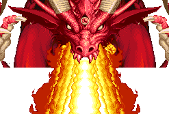

최종 보스 'Synn' |
기본 정보
클리어 시간 측정의 시작 시점
플레이어가 움직일 수 있는 시점 부터 최단 시간 클리어 기록
시프 4:53 |
|||||||||
10sp x10 + 500sp x1 (600sp) / 100sp x5 + 500sp x1 (1000sp) / 500sp x5 + 100ps x1 (2600sp) /
500sp x6 (3000sp)
| 점수 아이템 : | |
처음에는 사람의 모습을 하고 있지만 실은 거대하고 악한 드래곤이며 모든 플레이어들을 고생하게 만든 윈흉으로써 최종 보스답게 가장 많은 HP를 자랑한다.
......라고는 하지만 레드 드래곤과 거의 모든 패턴이 같으며 LB오일/라이트닝 볼트 크리티컬에 쉽게 무너지기 때문에 마지막 보스치고는 싱거운 느낌을 준다.
몇몇 게임처럼 처음에는 인간 마법사의 모습으로 싸우다가 HP가 다 떨어지면 용으로 변신하는 (약간 상투적인) 패턴을 도입했으면 어땠을까도 싶다.
인간 모습일 때의 Synn
"호오 또 다시 그 애송이들인가......약간 성장한 것으로 보이는군."
"끝을 봐야 할 때가 된 것 같구나."
"내손으로 직접 끝장을 내줘야 겠군."
이 후 용의 모습으로 변신을 한다.
텔'엘레논이 나그파를 물리친 후라면 이후로 대사가 약간 더 이어진다.
"?!?!?!?"
"........................."
영문판으로는 도저히 해석이 안되서 일어판의 대사를 덧붙힌다.

"네놈들도 이녀석 꼴 나지 않도록 조심해라!"
"큭! 내 혼자 힘으로는 여기까진가...... 그러나, 너라면 분명히 놈(년?)을 ......"
(어떻게 이 대사를 ....................로 번역했는지 이해가 안된다.)
클리어 후의 대사는 스테이지 공략에서 확인 하도록 하자.
| ※ 붉은색은 파이터가 입는 데미지, 푸른색은 매직 유저가 입는 데미지. 클레릭/드워프는 파이터에 가까운 데미지를, 시프/엘프는 매직 유저에 가까운 데미지를 입는다. |
|||||||||||||||||||||||||
| 손바닥 치기 (36/55) | |||||||||||||||||||||||||
| 순간 손을 가로로 휘두르는데 빠르기 때문에 위험하다. 또한 브레쓰를 제외하면 가장 뼈 아픈 공격이다. 다른 공격을 피할 때 날아오기도 하고 빈틈이 많은 공격을 할 때 뒤에서 날아올 수도 있기 때문에 가장 조심해야 할 공격이다. 얼른 파악을 했다면 위나 아래로 이동해서 피하고 늦게 파악을 했다면 파이터나 드워프는 A+B, 시프나 매직 유저는 백스텝, 클레릭이나 엘프는 빈 주문칸(D키)으로 피할 수 있는데 클레릭/엘프는 빈 주문칸을 준비하지 못한 상황이 많을테니 미리 파악해서 위 아래로 피하는게 좋다. 시프, 매직 유저, 엘프는 2대 맞으면 거의 빈사상태가 되니 이 셋은 특히 주의하도록 한다. |
|||||||||||||||||||||||||
| 파이어 볼 1 (30/55) | |||||||||||||||||||||||||
| 손에서 3개의 파이어 볼을 발사한다. 한손에서 발사하는 경우도 있고 양손에서 발사 하는 경우도 있다. 또한 두번 이상 연속으로 발사 하는 경우도 있다. 손 바로 밑이 아니라면 거의 대부분 점프로 피할 수 있으며 불 내성의 반지가 있다면 무시해도 되지만 주문 무효화 반지로는 막을 수 가 없다. 다시 말하면 이 공격은 파이어 볼 '주문'이 아니라는 뜻이다. 드래곤의 방패로 막을 수 있다. 물론 그것때문에 디스플레이서 망토를 버리고 방패를 가져오는 것은 무척 비효율적이다. 피하는 것은 어렵지 않지만 맞으면 아프다. |
|||||||||||||||||||||||||
| 물기 (54/54) | |||||||||||||||||||||||||
 |
말 그대로 플레이어 캐릭터를 물어버린다. 물기 전에 입을 벌리며 머리를 약간 위쪽으로 드는 모션을 보여주기 때문에 이런 모션이 보인다면 재빨리 슬라이딩으로 멀리 벗어나야 한다. 레버나 방향키를 좌우로 재빠르게 흔들면 데미지를 덜 입고 빨리 풀려날 수 있다. |
||||||||||||||||||||||||
| 파이어 볼 2 (27/40) | |||||||||||||||||||||||||
| 순간 화면 위로 사라진 후 파이어 볼을 무수히 떨어뜨린다. 많은 수가 떨어지고 또 폭발 범위가 있기 때문에 그림자를 보고 피하는 것은 거의 불가능하며 대신 좌우로 일정 폭을 가지고 떨어지기 때문에 Synn의 머리를 기준으로 반화면 바깥으로 벗어나면 피할 수 있다. 불의 속성을 지니고 있기 때문에 불 내성의 반지가 있으면 신경쓰지 않아도 되지만 메테오 스웜 주문 처럼 보여도 주문(spell)이 아니기 때문에 주문 무효화 반지는 아무 소용이 없다. |
|||||||||||||||||||||||||
| ★ 화염 브레쓰 (HP와 상관없이 한방에 즉사) | |||||||||||||||||||||||||
| 세가지 형태의 화염 브레쓰를 내뿜는다. 맞는 즉시 HP가 몇이든 상관없이 그대로 즉사하므로 그자체만 놓고 보면 아주 위험한 공격이다. 불 내성의 반지도 통하지 않으며 그동안 D키를 전혀 쓸 수 없기 때문에 매직 유저의 D → B → D → B 같은 것도 전혀 통하지 않는다. 일반 적으로 D키를 쓸 수 없지만 클레릭이 턴 언데드를 시전하면 D키를 쓸 수 있다. 그리고 드래곤의 방패가 있다면 전체 HP의 50%의 피해를 줄일 수 있다. 한번까지는 살 수 있다는 뜻이다. 그러나 그걸 바라고 드래곤의 방패를 가져오는 건 아무런 이득이 될게 없으며 또한 맞아보면 알겠지만 맞은 후 일어나자 마자 또 맞을 가능성이 높다. 총 3번의 브레쓰를 내뿜는데 각각 HP의 25%, 50%, 75%가 줄었을 때 내뿜는다. 각각의 브레쓰를 내뿜는 상황의 HP바를 보면 아래와 같다. (물론 두줄이 넘으면 ???로 표시되지만 좀 더 알기 쉽게 보여주기 위해 HP바로 표시 했다.) 1차 브레쓰
2차 브레쓰
3차 브레쓰
브레쓰의 각각의 특성은 아래와 같다. |
|||||||||||||||||||||||||
| 브레쓰 1 | |||||||||||||||||||||||||
|  | 평상시의 위치에서 공기를 빨아 들였다가 브레쓰를 내뿜는다. 공기를 빨아 들일 때 플레이어 캐릭터도 화면 중심으로 빨려 들어가기 때문에 재빨리 대쉬나 슬라이딩으로 빠져나와야 한다. | ||||||||||||||||||||||||
| 브레쓰 2 | |||||||||||||||||||||||||
| 화면에서 사라진 후 화면 왼쪽이나 오른쪽에서 공기를 빨아 들였다가 브레쓰를 내뿜는다. 빨아들이는 쪽으로 플레이어 캐릭터도 빨려 들어가는데 그쪽으로 슬라이딩이나 대쉬로 재빨리 이동하도록 한다. 방향 판단을 잘못해서 반대편으로 이동하면 끝장이니 주의. 화면 가장 자리가 안전지대다. 브레쓰가 끝나면 스테이지 맨 위에서 나타난다. |
|||||||||||||||||||||||||
| 브레쓰 3 | |||||||||||||||||||||||||
| 화면에서 사라진 후 배경의 먼 곳에서 머리를 내밀고 브레쓰를 내뿜는다. 화면전체에 브레쓰가 가득 차지만 스테이지 좌우에 색이 다른 타일이 하나씩 있는데 그것을 밟으면 작은 벽이 나와서 그곳에 있을 경우 피할 수 있다. 턴 언데드를 시전하면 순간 벽이 내려가니 주의하도록 한다. ※ 이 브레쓰는 드래곤의 방패가 있어도 한방에 즉사한다. 브레쓰가 끝나면 스테이지 맨 아래에서 나타난다. |
|||||||||||||||||||||||||
 화살표가 가리키는 색이 다른 타일을 밟으면 벽이 올라온다. 물론 왼쪽도 똑같이 가능하다. |
|||||||||||||||||||||||||
| 점프(???) | |||||||||||||||||||||||||
| 점프라고 보긴 뭣 하지만 하여튼 때때로 화면 위로 솟구치면서 꼬리를 보여줄 때가 있다. 딱히 위험한 요소가 있는 패턴은 아니지만 솟구치는 시간이 긴 경우가 많기 때문에 시간을 잡아먹는 요소가 된다. 화면의 양끝에 있을 때 특히 자주 볼 수 있다. |
|||||||||||||||||||||||||
▶ 다른 보스와는 달리 파이널 스트라이크가 500정도의 데미지 밖에 주지 못한다. 실제 HP바로 나타내면 아래와 같다. 또한 색이 다른 블럭을 밟아도 벽이 올라오지 않기 때문에 배경에서 날아오는 브레쓰를 피할 수 없다.
혼자서 무한 공격을 할 수 있는 클래스는 파이터, 매직 유저, 엘프 이며 다른 클래스는 2인 이상이서 타이밍을 맞춰서 공격하면 된다. 하나의 공략법 이라고 생각해도 된다.
* 영상 정보 - 플레이어 : legon *
◎ LB오일을 이용한 방법
| 타이밍만 놓치지 않으면 확실하게 Synn을 끝낼 수 있는 가장 효율적인 방법이므로 가장 많이 사용된다. 꼭 익혀야 할 방법이다. |
간단하게 요점을 정리 해 보자.
Synn이 불덩이를 떨어뜨리기 위해 올라갔다가 내려올 때 머리가 바닥과 거의 붙는데 이때를 노려서 LB오일을 던지면 몇배의 데미지를 입힐 수 있다. 단 바닥과 붙는 순간이 무척 짧으니 약간 일찍 던지기 시작해야 한다.
그런데 레드 드래곤 때와 다른 점이 있다면 피했다가 자리잡을 공간이 없다는 점이다. 그때와는 달리 위쪽이 안전지대가 아니다. 그렇다고 스테이지 양쪽에 피했다가 자리잡기엔 시간이 부족하다.
그래서 등장한 자리 잡는 방법이 시전시간이 긴 마법도구 및 주문의 활용이다. 이를 이용해서 불덩이를 피하고 자리를 잡은 후 LB오일을 던지는 것이다.
마법 도구는 진 소환의 반지나 이프리트의 항아리를 사용하는게 적절하며 라이트닝 볼트 반지, CSW 반지도 가능하다. 클레릭은 홀드 퍼슨이나 스틱 투 스네이크로 대체 가능하며 매직 유저는 매직 미사일이나 아이스 스톰으로 대체 가능하고 프로젝티드 이미지를 시전하는 것도 좋다.
물론 불 내성의 반지가 있다면 신경쓰지 않아도 된다.
파이어 로드가 있을 때와 없을 때 각각 몇개씩 LB오일을 던져야 되는지 알아보자.
| 1인 | 2인 | 3인 | 4인 | |
| 파이어 로드가 없을 경우 | 13개 | 15개 | 16개 | 17개 |
| 파이어 로드가 있을 경우 | 8개 | 9개 | 9개 | 10개 |
레드 드래곤의 경우와 마찬가지로 파이어 로드가 없다면 어느정도 공격을 더 하고 LB오일을 던져야 한다.
◎ 라이트닝 볼트를 이용한 방법
역시 레드 드래곤과 마찬가지로 3히트 후 라이트닝 볼트(반지포함)를 명중시키면 된다.
방법또한 레드 드래곤과 똑같다. 데미지에 대헤서 알아 보자.
★ 파이터 / 클레릭
레드 드래곤까지 잡고 레벨을 빠짐없이 올렸다면 이 시점의 레벨은 21로 반지의 데미지는 40이다.
아무런 장비도 없을 때 기본적으로 40 x 12 = 480 가량의 데미지가 나온다.
그리고 라이트닝 로드가 있을 경우 1.8~1.9배 가량 증가하고 이어링이 있을 경우 2.5배 가량 증가, 둘다 있다면 1.9배 가량 증가한다. 정리해보면라이트닝 로드가 있을 경우는 480 x 1.8~1.9 = 864 ~ 912 정도의 데미지가 나오며
이어링이 있을 경우 480 x 2.5 = 1200 정도의 데미지가 나오며
둘 다 있을 경우 480 x 1.9 = 912 정도의 데미지가 나온다.
★ 시프
레드 드래곤까지 잡고 레벨을 빠짐없이 올렸다면 이 시점의 레벨은 23으로 반지의 데미지는 40이다.
(22레벨 이하라면 파이터/클레릭과 같다.)
아무런 장비도 없을 때 기본적으로 40 x 12.5 = 500 가량의 데미지가 나온다.
그리고 라이트닝 로드가 있을 경우 1.8~1.9배 가량 증가하고 이어링이 있을 경우 2.5배 가량 증가, 둘다 있다면 1.9배 가량 증가한다. 정리해보면라이트닝 로드가 있을 경우는 500 x 1.8~1.9 = 900 ~ 950 정도의 데미지가 나오며
이어링이 있을 경우 500 x 2.5 = 1250 정도의 데미지가 나오며
둘 다 있을 경우 500 x 1.9 = 950 정도의 데미지가 나온다.
★ 매직 유저
이 시점의 매직 유저는 21레벨로 장비에 따라 데미지가 복잡하게 나뉜다. 바로 데미지만 보도록 하자.
라이트닝 볼트의 경우
라이트닝 로드가 있을 경우는 560 x 2 = 1120 정도의 데미지가 나오며
이어링이 있을 경우 560 x 2.5 = 1400 정도의 데미지가 나오며
둘 다 있을 경우 560 x 1.9 = 1064 정도의 데미지가 나온다.
마력의 지팡이만 있을 경우 560 x 2 = 1120 정도의 데미지가 나오며
+ 이어링이 있을 경우 560 x 3.1 = 1736 정도의 데미지가 나오며
+ 라이트닝 로드가 있을 경우 560 x 2 = 1120 정도의 데미지가 나오며
+ 라이트닝 로드 + 이어링이 있을 경우 560 x 2.3 = 1288 정도의 데미지가 나온다.
위저드리 스태프만 있을 경우 HP에 상관없이 무조건 즉사 시킬 수 있으며
+ 이어링이 있을 경우도 HP에 상관없이 무조건 즉사 시킬 수 있으며
+ 라이트닝 로드가 있을 경우 560 x 2.5 = 1400 정도의 데미지가 나오며
+ 라이트닝 로드 + 이어링이 있을 경우 560 x 2.7 = 1512 정도의 데미지가 나온다.
라이트닝 로드가 있을 경우는 480 x 2 = 960 정도의 데미지가 나오며
이어링이 있을 경우 480 x 2.5 = 1200 정도의 데미지가 나오며
둘 다 있을 경우 480 x 1.9 = 912 정도의 데미지가 나온다.
마력의 지팡이만 있을 경우 480 x 2 = 960 정도의 데미지가 나오며
+ 이어링이 있을 경우 480 x 3.1 = 1488 정도의 데미지가 나오며
+ 라이트닝 로드가 있을 경우 480 x 2 = 960 정도의 데미지가 나오며
+ 라이트닝 로드 + 이어링이 있을 경우 480 x 2.3 = 1104 정도의 데미지가 나온다.
위저드리 스태프만 있을 경우 480 x 3.3 = 1584 정도의 데미지가 나오며
+ 이어링이 있을 경우 HP에 상관없이 무조건 즉사 시킬 수 있으며
+ 라이트닝 로드가 있을 경우 480 x 2.5 = 1200 정도의 데미지가 나오며
+ 라이트닝 로드 + 이어링이 있을 경우 480 x 2.7 = 1296 정도의 데미지가 나온다.
| 1인 | 2인 | 3인 | 4인 | |
| 라이트닝 볼트 | 이어링 마력의 지팡이 + E 위저드리 스태프 위저드리 스태프 + E 위저드리 스태프 + L 위저드리 스태프 + E + L |
마력의 지팡이 + E 위저드리 스태프 위저드리 스태프 + E |
마력의 지팡이 + E 위저드리 스태프 위저드리 스태프 + E |
위저드리 스태프 위저드리 스태프 + E |
| 라이트닝 반지 | 마력의 지팡이 + E 위저드리 스태프 위저드리 스태프 + E |
위저드리 스태프 위저드리 스태프 + E |
위저드리 스태프 + E | 위저드리 스태프 + E |
★ 드워프
레드 드래곤 때와 모든것이 똑같다. LB오일이 실패 했을 때 차선책으로 쓰는게 좋다.
★ 엘프
마찬가지로 레드 드래곤때와 똑같고 라이트닝 로드나 이어링중 하나만 있어도 언제든지 즉사가 가능하다.
정리를 해보자면 파이터/클레릭/시프는 레드 드래곤 때에 비해서 실용성이 좀 더 좋아졌다고 할 수 있고 드워프는 여전히 별 쓸모가 없다.
매직 유저는 장비에 따라 데미지가 다르기 때문에 잘 생각해서 써야 한다. 완드를 이용한다면 이어링만 착용하는게 좋고 위저드리 스태프가 있다면 크게 신경쓰지 않아도 된다. 다만 2인 이상 플레이라면 라이트닝 로드는 없는 것이 좋다.
엘프는 레드 드래곤때와 마찬가지로 성공시킨다면 좋지만 성공시키기 어렵다는게 문제다.
◎ 두가지를 혼합한 방법
LB오일을 던질 경우 히트수가 딱 맞아 떨어지는지 바로 이어서 라이트닝 볼트를 시전하면 크리티컬이 성립한다. LB오일 크리티컬이 나오는 도중에 라이트닝 볼트 크리티컬까지 더해진다는 뜻이다.
LB오일 바로 뒷칸에 반지가 위치하도록 맞춰놓고 레드 드래곤이 낙석을 일으키고 내려올 때 LB오일을 5개 이상 던지고 바로 반지로 바꿔서 시전하면 된다.
불 내성의 반지가 있을 때 이용할 만 하며 무엇보다 라이트닝 크리티컬 보다 성공률이 훨씬 높다는 장점이 있다.